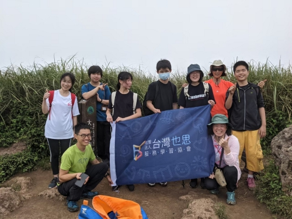
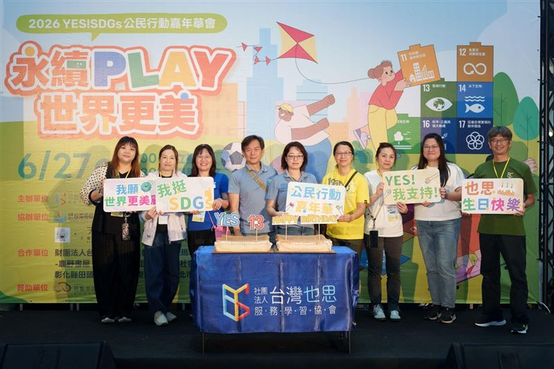

深夜那張蓋滿章的時數卡，真能換來一顆善良的心？
深夜的書桌前，日光燈映著孩子疲憊的臉龐。他把一張皺巴巴的「服務學習紀錄卡」遞到你面前，上面蓋著「校園清掃兩小時」、「圖書館排書三小時」的藍色印章。你簽下名字，耳邊卻傳來孩子帶著抱怨的低語：「媽，我還差四個小時，明天到底要去哪裡蓋章啊？」
這一幕，大概是許多台灣家庭每到學期末最熟悉的無奈。
我們本希望孩子懂得感恩、學會關懷他人，但不知從何時開始，這份柔軟的初衷被升學體制壓縮成一張「集點卡」。孩子滿校園找地方交差，大人忙著蓋章簽字——在這樣的往返裡，孩子的心靈真的觸碰到真實的世界了嗎？
在《無邊界學習》節目中，主持人江宜汾特別邀請到在教育現場深耕十多年的「台灣也思服務協會」創辦人郭瑤萍。多年前她經營補習班時，就做過一個讓旁人捏把冷汗的決定：她不逼孩子整天刷評量卷，反而帶著整班孩子走進巷弄，去拜訪里長、走進派出所、敲開社區診所的大門。
奇妙的是，那些平日裡在考卷前無精打采的孩子，走在熟悉卻從未細看的街頭時，眼神竟然全亮了起來。他們發現路口視線不良的死角、看見堆積在排水孔的菸蒂。郭瑤萍笑著回憶：「很多孩子在課本裡找不到熱情，那是因為課本跟他的生活沒有交集。當他看見這座城市的痛點跟自己有關時，學習就不再是應付大人的苦差事了。」

不是手心向下的施捨，而是平等的生命相遇
很多人常把「做志工」和「服務學習」混為一談。郭瑤萍在向國內引進服務學習的先驅黃玉教授請益後，才真正體會到兩者的不同。
「志工是衛福部管轄的範疇，核心是自發的愛心與奉獻；但服務學習是教育部的教學方法。」郭瑤萍溫和卻堅定地釐清這個盲點。服務學習從來不是讓孩子擺出「手心向下」的高姿態去憐憫弱者，而是一門嚴肅的學習歷程。
它有一條清晰的成長軌跡：**走進真實情境去發現問題、與夥伴討論出可行的辦法、捲起袖子付出行動，最後坐下來，好好梳理自己的心。**打破教室四面水泥牆的限制，讓孩子在真實世界的專案（PBL）中跌倒、摸索，學會傾聽、學會合作，也學會為自己的決定負起責任。
改掉一句壞話要 21 天：孩子在幫助他人時，悄悄療癒了自己
郭瑤萍分享一個讓人動容的小故事：有一群六年級的孩子，課堂氣氛總是非常緊繃，開口不是抱怨就是冷嘲熱諷。帶班的老師沒有疾言厲色地訓斥，而是把問題丟回給孩子：「我們能不能一起來研究，為什麼大家總是忍不住說難聽的話？」
孩子們開始在校園裡發問卷、統計全校同學的說話習慣，甚至查資料發現「要改掉一個習慣，需要連續堅持 21 天」。於是，他們親手繪製了一套可愛的打卡圖卡發給全校，發起「21 天不說壞話挑戰」。
這場挑戰最後並沒有每個人都拿滿分，甚至有不少孩子中途破功。但在結案的那天，孩子們坐在一起分享心得，其中一個平時最愛挖苦別人的大男孩輕聲說了一句讓全場大人紅了眼眶的話：
「原來要改掉一個壞習慣這麼難……那我們以後是不是該對那些脾氣不好的人，多一點點包容？」
那一刻，教育真正的魔法發生了。當孩子試著去理解他人的困難時，這份善意像一面鏡子，照亮了他自己內心的傷口與盲點。同理心從來不是背誦論語或品格標語能學會的，它是在一次次真實的受挫與反思中，悄悄長出來的柔軟力量。

鬆開雙手，讓世界成為孩子最寬廣的教室
這些年來，郭瑤萍帶著這套做法走過了台灣四十多所學校。彰化田頭國小的孩子蹲在農田邊觀察水圳；台東瑞源國小的孩子搭著慢速火車來到台北，站在繁華信義區的花圃前，驚訝地發現隱藏在美麗灌木叢下的菸蒂，竟然比鄉村的泥土路還要多。
每一次踏出教室的腳步，每一次親手觸摸泥土與街道的溫度，都在孩子心底埋下了一顆名為「關懷」的種子。那不是為了換取升學積點的虛應故事，而是看見自己能為腳下土地做些什麼的篤定與尊嚴。
陪伴孩子長大的路很長，我們不可能永遠為他們清除前方的碎石。但當身為父母與師長的我們願意稍稍後退一步，不再拿分數和時數卡框住他們，鼓勵他們張開眼睛看見周遭的人與環境，孩子自會在現實的泥淖與芬芳中，長出挺拔的骨氣。
當學習回歸生命的本質，孩子在與世界的真誠擁抱中，才會眼裡有光，心中有愛，昂首闊步地走向未來。